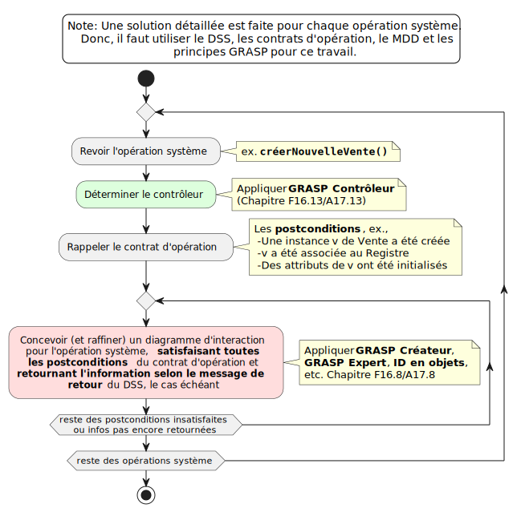
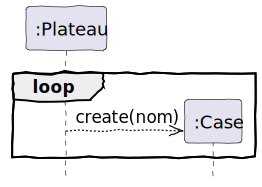
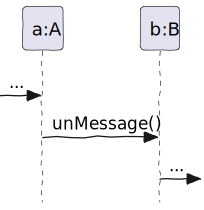
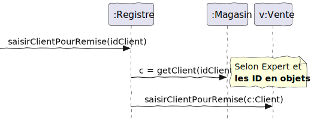
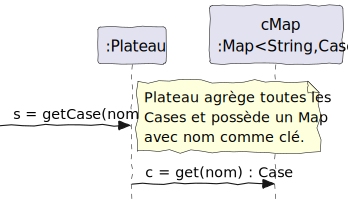
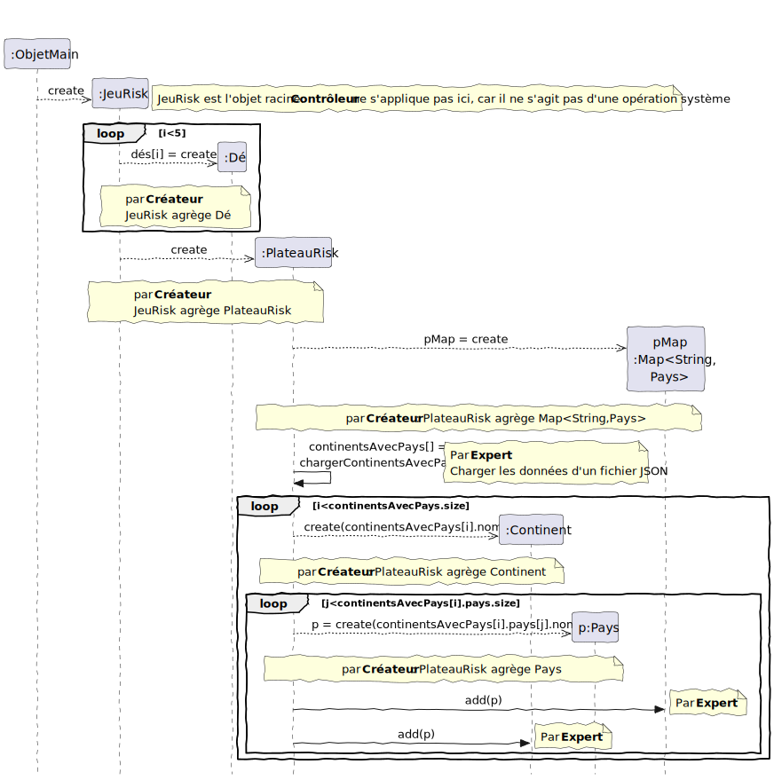

Les réalisations de cas d’utilisation (RDCU) sont le sujet du chapitre F17/A18 . Voici les points importants pour la méthodologie :
- Une RDCU est une synthèse des informations spécifiées dans le MDD, le DSS et les contrats d’opération. Elle sert à esquisser une solution (qui n’est pas encore codée) afin de rendre plus explicite l’activité impliquant des choix de conception. Si vous n’avez pas bien compris les autres éléments (MDD, DSS, etc.), il est difficile de réussir les RDCU. Il est normal de ne pas tout comprendre au début, alors posez les questions si vous ne comprenez pas.
- De manière générale, toute bonne RDCU doit faire les choses suivantes :
- spécifier un contrôleur (pour la première opération système dans un DSS, qui sera le même pour le reste des opérations dans le DSS) ;
- satisfaire les postconditions du contrat d’opération correspondant ;
- rechercher les informations qui sont éventuellement rendues à l’acteur dans le DSS.
- Il s’agit d’un diagramme de séquence en UML. Il faut alors maîtriser la notation UML pour ces diagrammes, mais on applique la notation de manière agile :
- Il n’est pas nécessaire de faire les boîtes d’activation, car ça prend du temps à les faire correctement lorsqu’on dessine à la main un diagramme.
- On doit se servir des annotations pour documenter les choix (GRASP).
- On dessine à la main des diagrammes puisqu’on peut faire ça en équipe à un tableau blanc. Mais aussi, à l’examen vous devez faire des diagrammes à la main.
- Au lieu d’un message pointillé indiquant le retour d’une valeur à la fin de l’exécution d’une méthode, on utilise l’affectation sur le message (comme dans la programmation), par exemple
c = getClient(...)à la figure 9.4
- Le livre de Larman (2005) présente quelques RDCU qui sont des diagrammes de communication. Cette notation n’est pas utilisée dans ce manuel, car elle est plus complexe à utiliser et elle est comparable à la notation des diagrammes de séquence.
- Faire des RDCU est plus agile que coder, car dans un diagramme on peut voir le flux de plusieurs messages à travers plusieurs classes. Dans une solution codée, il serait nécessaire d’ouvrir plusieurs fichiers afin de voir le code de chaque méthode (message) et on ne peut pas voir toute la dynamique de la même manière. Faire des changements à un diagramme (avant de le coder) est en principe plus facile que changer le code source. On peut également se servir des structures (
List,Array,Map, etc.) dans un diagramme, avant que celles-ci ne soient créées. - Faire des RDCU est une activité créative. Un diagramme dynamique en UML peut avoir une mauvaise logique, car il s’agit d’un dessin. Le codage dans un langage de programmation est la seule manière de valider une RDCU. Évidemment, la programmation prend beaucoup plus de temps et n’est pas insignifiante. Faire une RDCU est comme faire un plan pour un bâtiment, tandis que faire de la programmation est comme construire le bâtiment. Si un plan contient des erreurs de conception, on va les savoir lors de la construction. Alors, votre RDCU sera en doute jusqu’à ce que vous la traduisiez en code exécuté et testé.
Tout le processus de proposer une solution (RDCU) peut être visualisé comme un diagramme d’activités, comme dans la figure 9.1.

9.1 Spécifier le contrôleur
Pour commencer une RDCU, on spécifie le contrôleur selon GRASP. Dans les travaux réalisés selon la méthodologie de ce manuel, vous devez indiquer pourquoi vous avez choisi telle classe pour être le contrôleur. Ce n’est pas un choix arbitraire. Référez-vous à la définition dans le tableau 6.1.
Pour initialiser les liens entre la couche présentation et les contrôleurs GRASP, Larman vous propose de le faire dans la RDCU pour l’initialisation, le scénario Démarrer.
9.2 Satisfaire les postconditions
9.2.1 Créer une instance
Certaines postconditions concernent la création d’une instance. Dans votre RDCU, vous devez respecter le GRASP Créateur. Référez-vous à la définition dans le .
Une erreur potentielle est de donner la responsabilité de créer à un contrôleur, puisqu’il a les données pour initialiser l’objet. Bien que ce soit justifiable par le principe GRASP Créateur, il vaut mieux favoriser une classe qui agrège l’objet à créer, le cas échéant.
9.2.2 Former une association
Pour les postconditions où il faut former une association entre un objet a et b, il y a plusieurs façons de faire.
- S’il y a une agrégation entre les objets, il s’agit probablement d’une méthode
add()sur l’objet qui agrège. - S’il y a une association simple, il faut considérer la navigabilité de l’association. Est-ce qu’il faut pouvoir retrouver l’objet a à partir de l’objet b ou vice-versa ? Il s’agira d’une méthode
setB(b)sur l’objeta(pour trouver b à partir de a), etc. - S’il faut former une association entre un objet et un autre « sur une base de correspondance avec » un identifiant passé comme argument, alors il faut repérer le bon objet d’abord. Voir la section Transformer identifiants en objets.
Dans la plupart des cas, la justification GRASP pour former une association est Expert, défini dans le . Il faut faire attention à la visibilité .
9.2.3 Modifier un attribut
Pour les postconditions où il faut modifier un attribut, c’est assez évident. Il suffit de suivre le principe GRASP Expert, défini dans le . Très souvent, c’est une méthode setX(valeur) où X correspond à l’attribut qui sera modifié à valeur. Attention à la visibilité .
Lorsque l’attribut d’un objet doit être modifié juste après la création de ce dernier, ça peut se faire dans le constructeur, comme on voit dans la figure 9.2.

9.3 Visibilité
Dans tous les cas, si un message est envoyé à un objet, ce dernier doit être visible à l’objet qui lui envoie le message. Régler les problèmes de visibilité nécessite de la créativité. Il est difficile à enseigner cette démarche, mais les points suivants peuvent aider :
- Pour un objet racine (par exemple
Université) il peut s’agir d’un objet Singleton, qui aura une visibilité globale. C’est-à-dire que n’importe quel objet pourrait lui envoyer un message. Cependant, les objets Singleton posent des problèmes de conception, notamment pour les tests. Il vaut mieux éviter ce choix, si possible.
Voir cette réponse sur stackoverflow . - Sinon, il faudra que l’objet émetteur ait une référence de l’objet récepteur. Par exemple dans la figure 9.3, la référence à b peut être :
- stockée comme un attribut de a,
- passée comme un argument dans un message antérieur, ou
- affectée dans une variable locale de la méthode où
unMessage()sera envoyé.
Pour plus de détails, voir le chapitre sur la Visibilité (F18/A19) .

Pour initialiser les références nécessaires pour la bonne visibilité, Larman vous propose de faire ça dans la RDCU pour l’initialisation, le scénario Démarrer.
9.4 Transformer identifiants en objets
La directive d’utiliser les types primitifs pour les opérations système nous mène à un problème récurrent dans les RDCU : transformer un identifiant (souvent de type String ou int) en objet. Larman vous propose un idiome (pas vraiment un patron) nommé Transformer identifiant en objet qui sert à repérer la référence d’un objet qui correspond à l’identifiant.
Il y a un exemple à la figure 9.4 provenant du chapitre sur l’Application des patterns GoF (Figure 23.18) . Un autre exemple du livre de Larman (2005) est l’identifiant codeArticle transformé en objet DescriptionProduit par la méthode
CatalogueProduits.getDescProduit(codeArticle:String):DescriptionProduit.

idClient:String est transformé en objet c:Client, qui est ensuite envoyé à la Vente en cours. (PlantUML)La Section 9.5 explique comment implémenter la transformation avec un tableau associatif.
9.5 Utilisation de tableau associatif (Map<clé, objet>)
Pour transformer un ID en objets, il est pratique d’utiliser un tableau associatif (aussi appelé dictionnaire ou map en anglais) . L’exemple du livre de Larman (2005) concerne le problème de repérer une Case Monopoly à partir de son nom (String). C’est la figure A17.7/F17.7 .
Notez que les exemples de Larman (2005) ne montrent qu’un seul type dans le tableau associatif, par exemple Map<Case>, tandis que normalement il faut spécifier aussi le type de la clé, par exemple Map<String, Case>.
Un tableau associatif fournit une méthode get ou find pour rechercher un objet à partir de sa clé (son identifiant). La figure 9.5 en est un exemple.

Dans la section suivante, l’initialisation des éléments utilisés dans les RDCU (comme des tableaux associatifs) est expliquée.
9.6 RDCU pour l’initialisation, le scénario Démarrer
Le lancement de l’application correspond à la RDCU « Démarrer ». La section Initialisation et cas d’utilisation Démarrer (F17.4, p.345) ou Initialization and the ‹Start Up› Use Case (A18.4, p.274) traite ce sujet important. C’est dans cette conception où il faut mettre en place tous les éléments importants pour les hypothèses faites dans les autres RDCU, par exemple les classes de collection (Map), les références pour la visibilité, l’initialisation des contrôleurs, etc.
Voici quelques points importants :
- Le lancement d’une application dépend du langage de programmation et du système d’exploitation.
- À chaque nouvelle RDCU, on doit possiblement actualiser la RDCU « Démarrer » pour tenir compte des hypothèses faites dans la dernière RDCU. Elle est assez « instable » pour cette raison. Larman recommande de faire sa conception en dernier lieu.
- Il faut choisir l’objet du domaine initial, qui est souvent l’objet racine, mais ça dépend du domaine. Cet objet aura la responsabilité, lors de sa création, de générer ses « enfants » directs, puis chaque enfant aura à faire la même chose selon la structure. Par exemple, selon le MDD pour le jeu de Risk à la figure 4.1,
JeuRiskpourrait être l’objet racine, qui devra créer l’objetPlateauRisket les cinq instances deDé. L’objetPlateauRisk, lors de son initialisation, pourra instancier les 42 objetsPayset les six objetsContinent, en passant à chaqueContinentleurs objetsPayslors de son initialisation. SiPlateauRiskfournit une méthodegetPays(nom)qui dépend d’un tableau associatif selon Transformer identifiants en objets, alors c’est dans l’initialisation de cette classe où l’instance deMap<String,Pays>sera créée. - Selon l’application, les objets peuvent être chargés en mémoire à partir d’un système de persistance, par exemple une base de données ou un fichier. Pour l’exemple de Risk,
PlateauRiskpourrait charger, à partir d’un fichier JSON, des données pour initialiser toutes les instances dePays. Pour une application d’inscription de cours à l’université, il se peut que toutes les descriptions de cours soient chargées en mémoire à partir d’une base de données. Une base de données amène un lot d’avantages et d’inconvénients, et elle n’est pas toujours nécessaire. Dans la méthodologie de ce manuel, on n’aborde pas le problème de base de données (c’est le sujet d’un autre cours).

9.7 Réduire le décalage des représentations
Le principe du Décalage des représentations est la différence entre la modélisation (la représentation) du problème (du domaine) et la modélisation de la solution. Lorsqu’on fait l’ébauche d’une RDCU, on peut réduire le décalage des représentations principalement en s’inspirant des classes conceptuelles (du modèle du domaine) pour proposer des classes logicielles dans la solution décrite dans la RDCU. Plus une solution ressemble à la description du problème, plus elle sera facile à comprendre.
Une application de pattern GoF à la solution peut nuire à ce principe, car ces patterns rajoutent souvent des classes logicielles n’ayant aucun lien avec le modèle du domaine. Par exemple, un Visiteur ou un Itérateur sont des classes logicielles sans binôme dans le modèle du domaine. Il faut vérifier avec une personne expérimentée (l’architecte du projet si possible) que l’application du pattern est justifiée, qu’elle apporte de vrais bénéfices au design en dépit des désavantages dus à des classes ajoutées. Chaque fois qu’on propose des classes logicielles qui n’ont pas de liens avec la représentation du problème du domaine, on augmente le décalage des représentations et on rend la solution un peu plus difficile à comprendre. C’est aussi une forme de Complexité circonstancielle (provenant des choix de conception). Ce dilemme est un bon exemple de la nature pernicieuse de la conception de logiciels. Il est très difficile, même pour les experts en conception, de trouver un bon équilibre entre toutes les forces : la maintenabilité, la simplicité, les fonctionnalités, etc. Vous pouvez en lire plus dans cette réponse sur StackOverflow .
9.8 Pattern « Faire soi-même »
Dans la section F30.8/A33.7 , Larman mentionne le pattern « Faire soi-même » de Peter Coad (1997) qui permet de réduire le Décalage des représentations, même s’il ne représente pas exactement la réalité des objets (voir la figure 9.7 ):